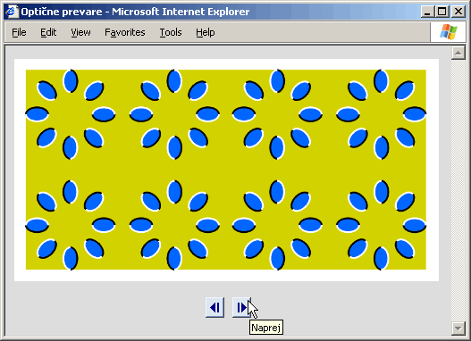

Utrjujemo snov 3. poglavja
Vprašanja z izbiro
- Kaj bo storil brskalnik, če v izvorni kodi dokumenta naleti na nepoznan element?
- Prikazal ne bo ničesar.
- Javil bo napako.
- Prikazal bo le vsebino elementa.
- Prikazal bo vsebino elementa ter začetno in končno značko.
- Kaj bo storil brskalnik, če v izvorni kodi dokumenta naleti na nepoznano lastnost elementa?
- Lastnost bo spregledal.
- Javil bo napako.
- Elementa, ki vsebuje neznano lastnost, sploh ne bo prikazal.
- Od elementa, ki vsebuje neznano lastnost, bo prikazal le neoblikovano vsebino.
- Kakšnega tipa element je element img?
- Vrstičen in prazen.
- Vrstičen z vsebino.
- Blokovski in prazen.
- Blokovski z vsebino.
- Kam zapisujemo lastnosti elementov?
- Takoj za začetno značko.
- V začetno značko pred imenom elementa.
- V končno značko.
- V začetno značko za imenom elementa.
- Kakšna je pravilna oblika zapisa lastnosti elementa?
- ime_lastnosti = "vrednost"
- ime_lastnosti = vrednost
- ime_lastnosti: vrednost
- ime_lastnosti: "vrednost"
- Kakšna je pravilna oblika zapisa lastnosti elementa?
- ime_lastnosti = 'vrednost'
- ime_lastnosti = " vrednost "
- ime_lastnosti = vrednost
- ime_lastnosti: "vrednost"
- Kadar podamo elementu več lastnosti, kako jih ločujemo med seboj?
- Z vejicami.
- S presledki.
- Vsakega moramo pisati v novo vrstico.
- S podpičji.
- S kakšnimi črkami moramo pisati imena lastnosti?
- Z malimi.
- Z velikimi.
- Z malimi, vendar z veliko začetnico.
- Velikost črk ni pomembna.
- Kako ustvarimo spletno povezavo?
- Z elementom a in lastnostjo href.
- Z elementom a in lastnostjo id.
- Z elementom img in lastnostjo src.
- Z elementom img in lastnostjo alt.
- V izvorni kodi nekega dokumenta naletimo na spletno povezavo oblike <a href="#zacetek">Na začetek strani</a>. Kaj moramo vstaviti na začetek dokumenta, da nas bo klik na to povezavo prestavil na začetek dokumenta?
- <a href="zacetek"></a>
- <a href="#zacetek"></a>
- <a id="zacetek"></a>
- <a id="#zacetek"></a>
- Kako ustvarimo spletno povezavo na stran 007.html prek slike 007.jpg?
- Element img z lastnostjo src="007.jpg" vstavimo v element a z lastnostjo href="007.html".
- Elementu img nastavimo lastnost alt="007.html" in lastnost src="007.jpg".
- Elementu a nastavimo lastnost href="007.html#007.jpg".
- V element img z lastnostjo src="007.jpg" vstavimo element a z lastnostjo href="007.html".
- Kako ustvarimo povezavo na pošiljanje pošte na naslov brusvilis@holivud.kom z zadevo sporočila Yo!?
- <a href="brusvilis@holivud.kom?subject=Yo!">Piši mi</a>
- <a href="mailto:brusvilis@holivud.kom?subject=Yo!">Piši mi</a>
- <a mailto="brusvilis@holivud.kom" subject="Yo!">Piši mi</a>
- <a mailto="brusvilis@holivud.kom?subject=Yo!">Piši mi</a>
- Kako pravilno nastavimo zeleno (angl. green) barvo ozadja v elementu body?
- color="#green"
- color="green"
- bgcolor="green"
- bgcolor="#green"
- Kateri od naslednjih zapisov barvi ozadja NE PRIREDI pravilno rdeče (angl. red) barve?
- bgcolor=" red "
- bgcolor="red"
- bgcolor = "#FF0000"
- bgcolor="#FF0000"
- Kateri od naslednjih zapisov začetne značke elementa z eno lastnostjo je NAPAČEN?
- <ime_elementa ime_lastnosti = 'vrednost'>
- <ime_elementa ime_lastnosti = "vrednost">
- < ime_elementa ime_lastnosti = "vrednost">
- <ime_elementa ime_lastnosti="vrednost">
V razmislek
Izdelajte spletno galerijo, v kateri bo na vsaki spletni strani ena slika, pod njo pa puščici za naprej in nazaj. Klik na katero od obeh puščic naj gledalca preusmeri na prejšnjo oziroma naslednjo stran. Vsaki sliki puščice dodajte okence z namigom z besedilom "Naprej" oziroma "Nazaj". Spodaj vidite primer izgleda galerije.

Da bo zadeva bolj uporabna, lahko dodate še puščici na prvo oziroma zadnjo stran galerije ter povezavo na osnovno stran z nohtki. Dodajte še sliko pisma s povezavo na pošiljanje pošte, da bo lahko gledalec kaj pokomentiral.